People miss meteor showers, planetary alignments and asteroid passes because no app answers this question directly. Every major space event brings a wave of “how do I watch this?” and “is it safe?” searches.
[ Project 04 / 09 ]UI/UXPortfolio 2026
AI-Powered Sky-Learning App
Skylore helps people understand the sky above them. Point the phone up and the app labels constellations, planets, satellites and asteroids, then explains what you are looking at in plain language.
It is built around one question: is tonight worth going outside, from where I am, right now?
- Genre
- Education / Lifestyle
- Platform
- iOS
- Team
- 3 People
- Role
- Designer / Artist
- Working title
- StarSense
- Status
- Launched · not continued


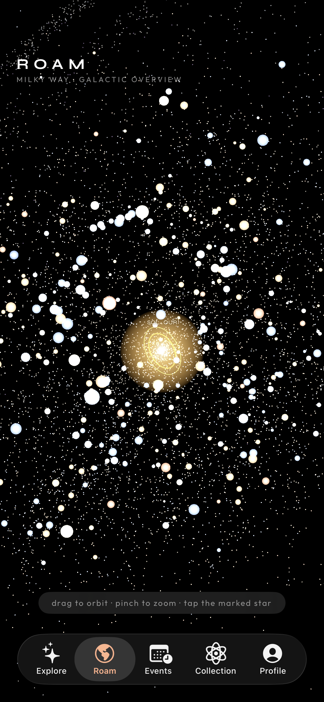
01Problem
People miss meteor showers, planetary alignments and asteroid passes because no app answers this question directly.
“Is tonight worth going outside, from my location, right now?”
02What I did
Designer / Artist
All key screens designed and approved in Figma. AI feature scope finalised.
03Outcome
Skylore was launched, but the project did not progress further after launch.
Six screenshots, each built around one feature: the live sky map, constellations, the lunar calendar, eclipses, alerts and discovery.
04.1Concept
“Is tonight worth going outside, from my location, right now?”
[ Audience ]
US adults aged 25–50, iPhone-first, living in suburban or rural areas. They go camping at the weekend and follow space news during the week.
[ Daily trigger ]
A meteor shower or asteroid headline appears on social media, and they want to know how to watch it tonight from their own backyard.
[ Three sources, one score ]
One number for tonight’s sky
To plan a night of stargazing, people check three separate places. Skylore combines them into a single clear-sky score for the user’s location.
01Weather appWill there be clouds?
02Light-pollution mapCan I see anything from here?
03Star brightness chartWhat is worth looking for tonight?
→
Clear Sky Tonight
Wind, moon, humidity, seeing and Bortle class in one card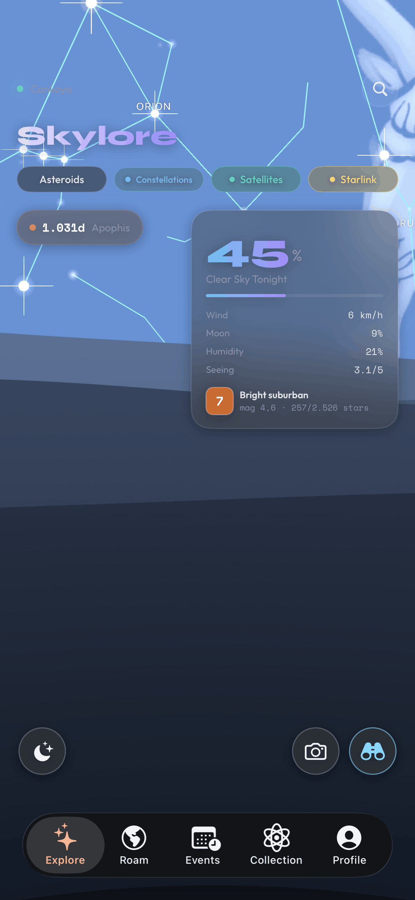
04.2 — AI features
Four ways the app looks up for you
The AI layer was planned to make the sky approachable for beginners and to bring people back on the nights that matter.
01
AI Sky Narrator
Explains what is in the sky in conversational language, so beginners are not overwhelmed.
02
Smart Event Alerts
Notifications 24–48 hours before ISS passes, meteor showers, moon phases and eclipses.
03
NEO Tracker
NASA CNEOS data, a plain-English risk score and a countdown to the Apophis flyby on 13 April 2029.
04
SpaceX Live Tracker
Real-time rocket and satellite positions, with Starlink pass alerts that label satellite trains in the sky.
[ Core loop ]01 Alert 24–48 h before an event→02 Open the app→03 Point the camera at the sky
04.3Features & experience
Five tabs, one night sky
01 Explore02 Roam03 Events04 Collection05 Profile
Tab 01 / Explore
The live sky
The home screen is a real-time sky map for the user’s location. Constellation lines and artwork sit over the sky, and filters switch between asteroids, constellations, satellites and Starlink.
- ·Apophis 2029 countdown, linked to the NEO Tracker
- ·Clear-sky score in the top right
- ·Camera mode lays the map over the real sky
- ·Moon phase calendar from the moon icon
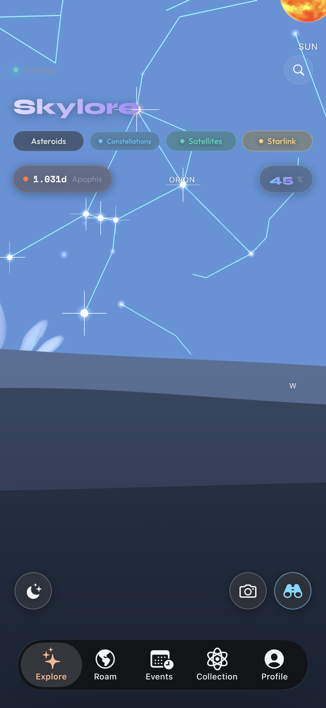
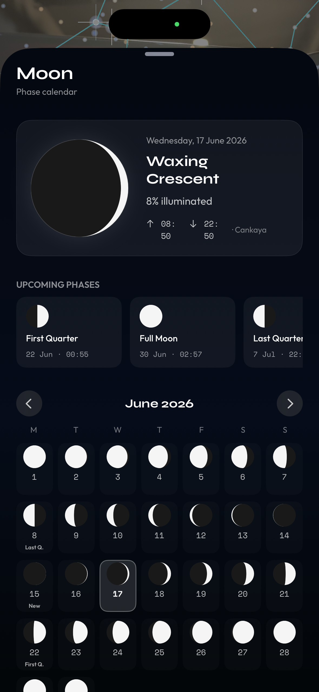
Tab 02 / Roam
Fly out into the galaxy
Roam is a 3D view of the Milky Way and the solar system. Drag to orbit, pinch to zoom, and tap a planet to see its gravity, day length and surface temperature.
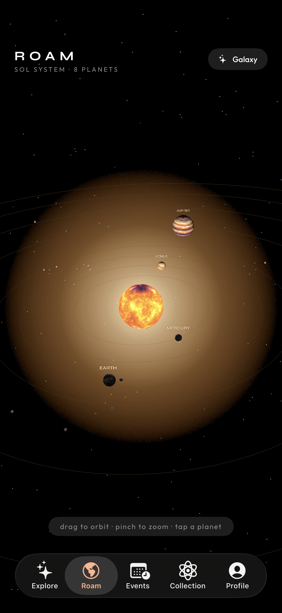
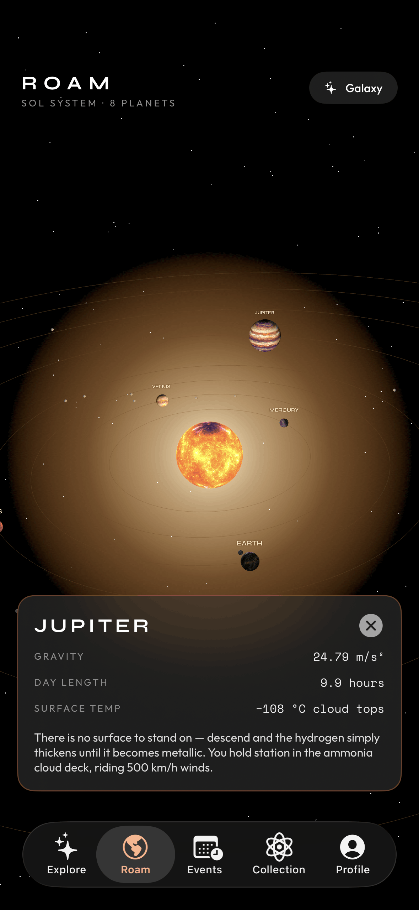
Tab 03 / Events
What’s coming up overhead
Events lists satellite passes, asteroid flybys, meteor showers, moon phases and eclipses for the user’s location. The next pass is pinned at the top with its path across the sky and a reminder button.
Opening a satellite shows where it is right now, its orbit and a short explanation of what it is.
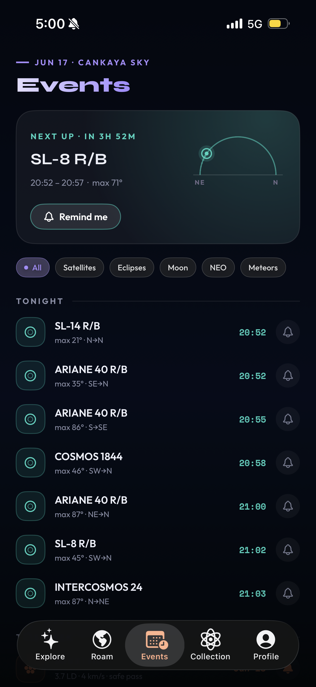
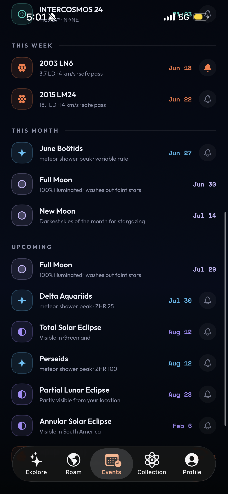
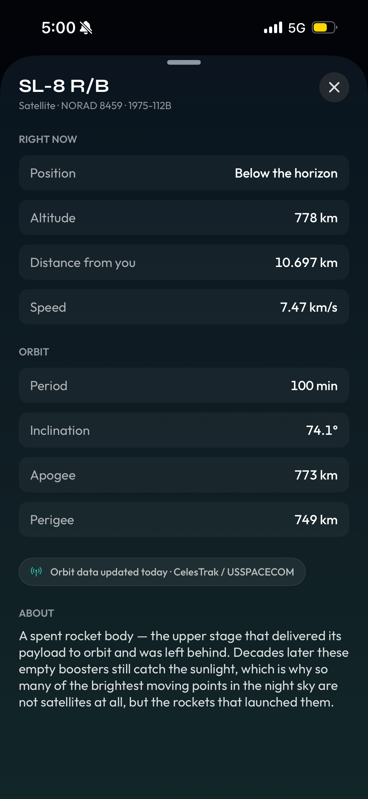
Tab 04 / Collection
A universe you chart yourself
Every object the user finds is saved. The collection counts stars, constellations, planets and moons, and asteroids. Each constellation opens into its lore, properties and stars.
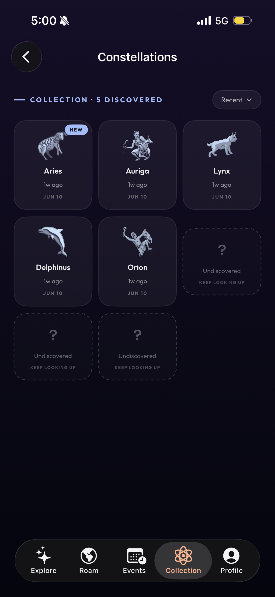

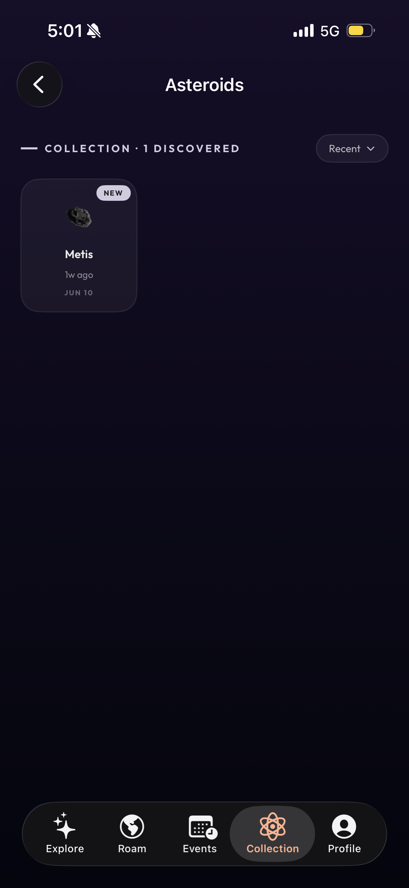
Tab 05 / Profile
Rewards for looking up
Discoveries unlock achievements such as First Light, Constellation Prize and Planet Parade. Each one can be shared, so “I watched it from my backyard” can bring in new users.
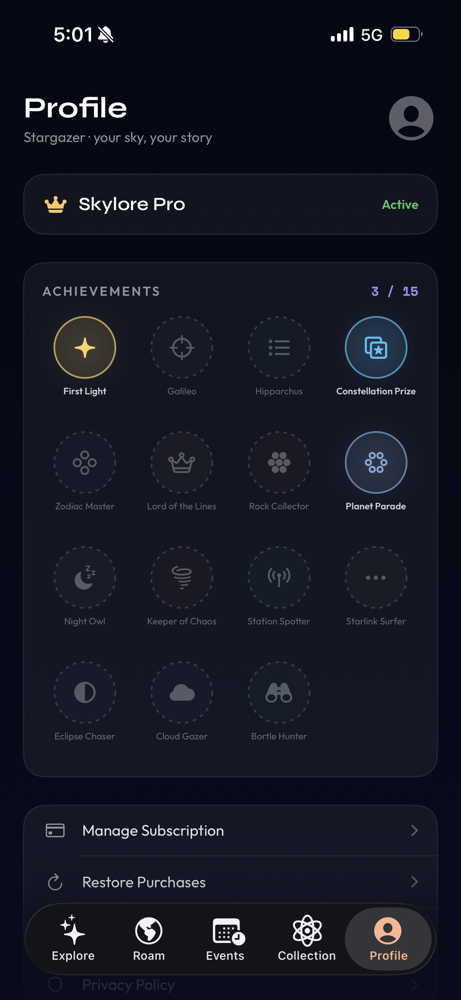
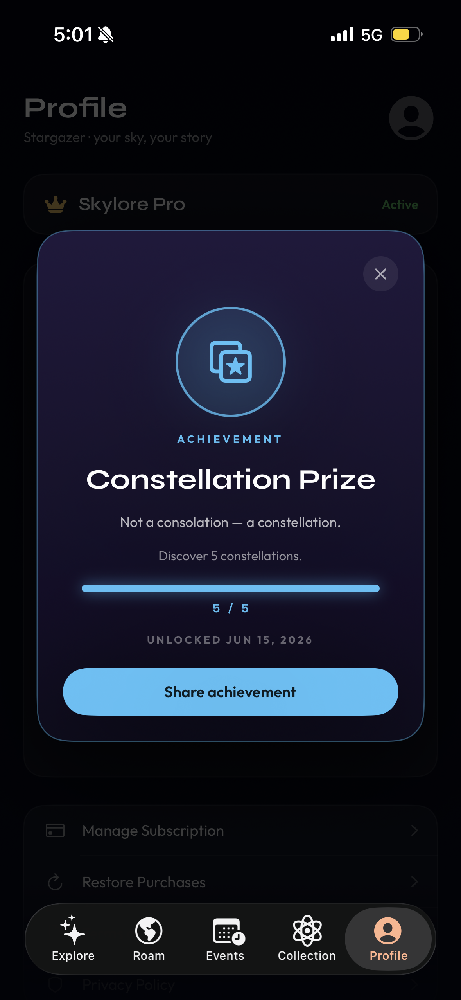
04.4UI/UX design
A night-sky interface
01Dark surfaces, glass over the sky
Deep navy and black backgrounds, with translucent cards and pill filters floating over the live sky map.
02Colour-coded sky objects
Each object type keeps its colour across filters, event icons and collection counts.
AsteroidsSatellitesConstellationsStarlinkMoon & eclipses
03Two type voices
An extended display face for the wordmark and tab titles. Monospaced numerals for times, magnitudes and countdowns.
04Gestures written on screen
Hints such as “drag to orbit · pinch to zoom · tap a planet” show how to move through the 3D views.

04.5 — Team
Team & launch plan
The planned timeline from approved designs to a store-ready app.
01 — MeMelisaDesigner / Artist
02UtkuDeveloper
03ÖznurProduct Manager
01 · 2 Jun 2026
Design checked, development ready
All key screens designed and approved in Figma. AI feature scope finalised.
02 · 5 Jun 2026
MVP on TestFlight
Onboarding, paywall and the AI core working end to end.
03 · 10 Jun 2026
Store ready
App Store listing complete, critical bugs resolved, performance tested on target devices.
04.6Final product
The App Store listing
Six screenshots, each built around one feature: the live sky map, constellations, the lunar calendar, eclipses, alerts and discovery.
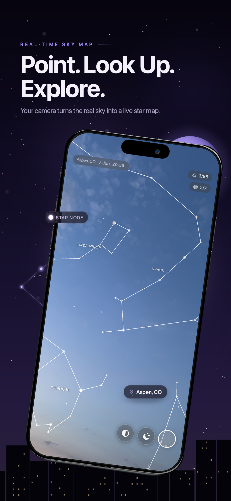
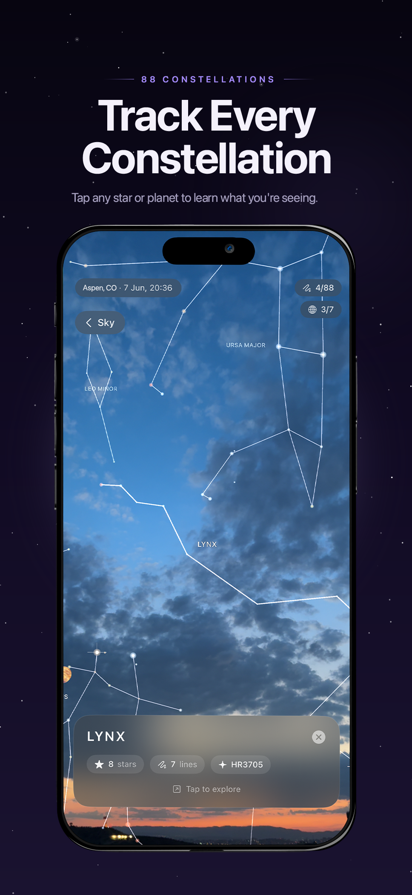
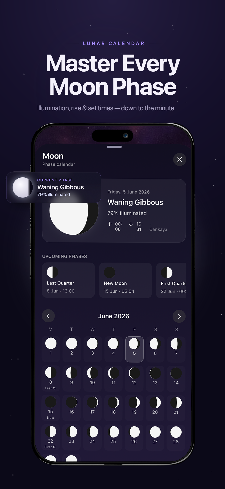
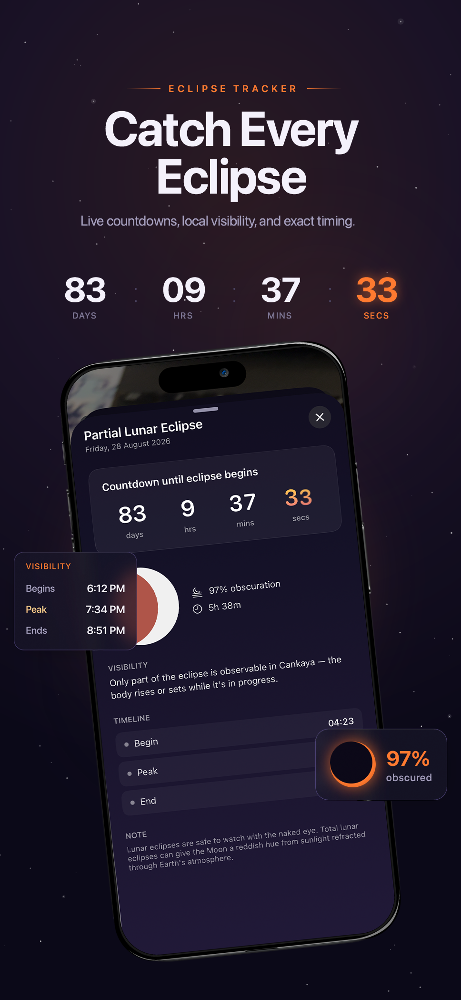
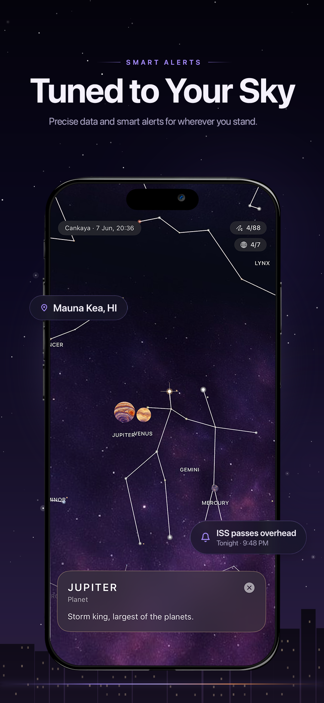
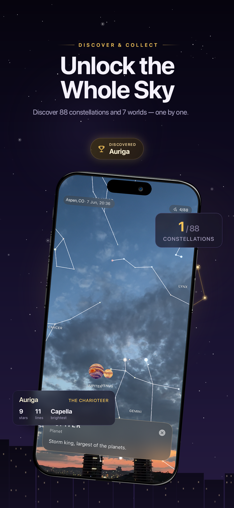